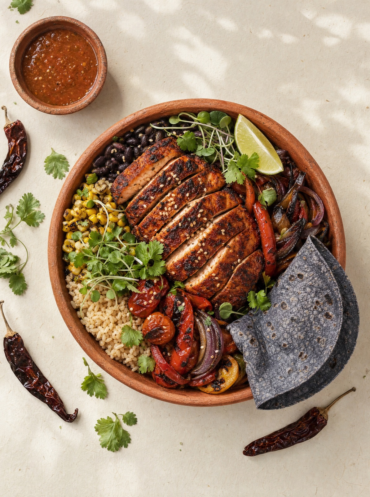
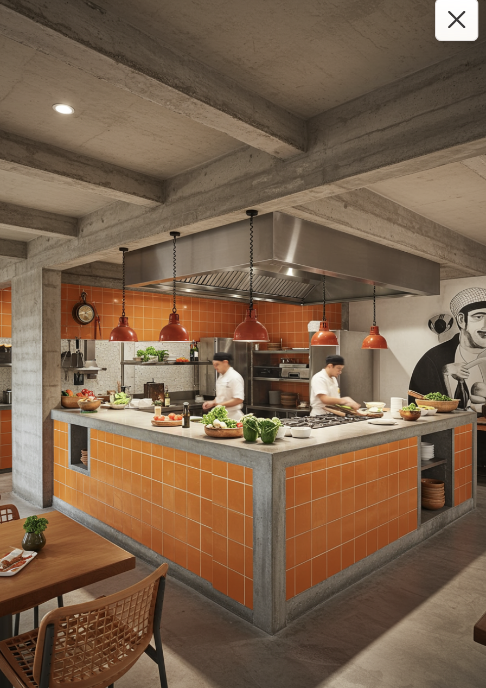
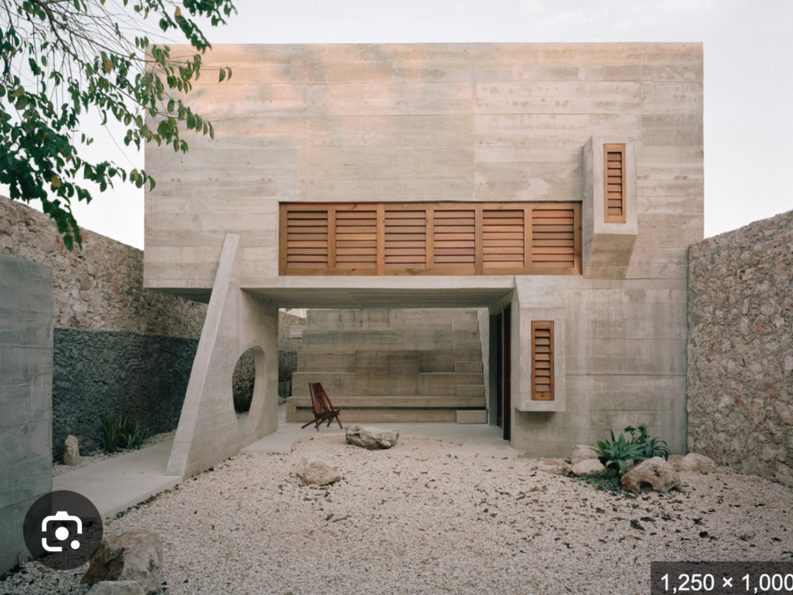

Come rico.
Avanza exacto.
Alta cocina mexicana con porciones y macronutrientes calculados para tu objetivo. Tú entrenas y vives; nosotros pesamos, medimos y cocinamos. Sin contar calorías. Sin sacrificar sabor.

Tu objetivo, traducido a gramos
Tres pasos entre tu meta y tu plato. La inteligencia está en la cocina, no en tu cabeza.
Registra tu perfil
Peso, estatura, actividad y objetivo: perder grasa, ganar músculo o rendir más. Dos minutos, una sola vez.
La IA calcula
Tu perfil se convierte en calorías y macros exactos por comida. Cada plato del menú se ajusta a tus números en tiempo real.
La cocina ejecuta
Gramajes precisos en cocina abierta con sistema modular. Ves tu plato armarse frente a ti, al gramo.
Tus macros, en vivo y al gramo
Mientras armas tu plato, la app muestra cómo cada módulo mueve tus números. Agrega guacamole y ve subir las grasas. Cambia tortilla por arroz y mira el ajuste al instante. Coaching nutricional pasivo: sin esfuerzo, sin culpa, sin hojas de cálculo.
Brutalismo mexicano, cocina abierta
Concreto crudo, azulejo naranja y fuego a la vista. Un espacio inspirado en la costa de Oaxaca: lujoso sin adornos, deportivo sin gimnasio, mexicano sin cliché.


Tu objetivo ya tiene cocina
Calcula tus macros y arma tu primer plato en menos de tres minutos.
Arma tu plato